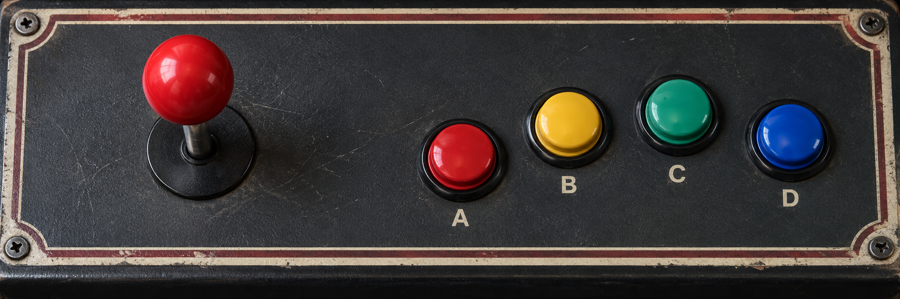

街機
KNIGHTS OF VALOUR · SUPER HEROES
三国战纪 风云再起
待机
戰
等待游戏载入
正在连接本地模拟器…
FBNeo · 原版街机模拟生命—
血量—
得分—
关卡进展—

摇杆 · 中立
当前动作 / DECISION
等待载入游戏
尚未开始训练 · 通关未验证
道具 / INVENTORY
道具状态未校准
尚无使用记录
实时模拟器画面 · 普通按键控制 · 对局记录可核验
KNIGHTS OF VALOUR · SUPER HEROES
正在连接本地模拟器…
FBNeo · 原版街机模拟
当前动作 / DECISION
尚未开始训练 · 通关未验证
道具 / INVENTORY
道具状态未校准
尚无使用记录
实时模拟器画面 · 普通按键控制 · 对局记录可核验